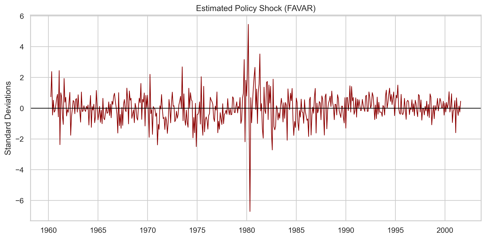
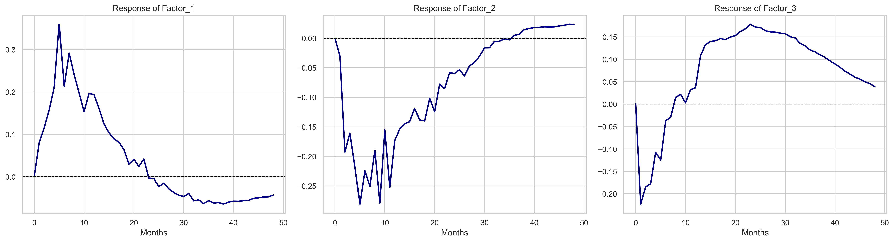

Replicación del Modelo FAVAR
Bernanke, Boivin y Eliasz (2005)
Medición de los Efectos de la Política Monetaria
Carlos Guillermo Mayorga Tapia
Maestría en Estadística — Universidad Anáhuac México Norte
1. Resumen del Artículo
Objetivo Principal
Los Vectores Autorregresivos (VAR) tradicionales sufren de sesgos (como el "Price Puzzle") porque los bancos centrales usan cientos de variables, no solo las 3 o 6 típicas de un VAR pequeño.
BBE (2005) resuelven esto combinando Factores Latentes (PCA) extraídos de un panel masivo de datos con un modelo VAR.
1. Resumen del Artículo
Metodología (FAVAR)
- Datos: 120 series mensuales de EE.UU. (1959-2001).
- Ecuación de Observación: $X_t = \Lambda^f F_t + \Lambda^y Y_t + e_t$
- Ecuación de Transición: $\begin{bmatrix} F_t \\ Y_t \end{bmatrix} = \Phi(L) \begin{bmatrix} F_{t-1} \\ Y_{t-1} \end{bmatrix} + v_t$
- Estimación: Componentes Principales de 2 Pasos vs Gibbs Sampling.
Métricas de Evaluación
- Descomposición de Varianza del Error (FEVD) a 60 meses.
- Coeficiente de Determinación ($R^2$) de los factores sobre las series.
- Análisis Cualitativo de las Funciones de Impulso-Respuesta (IRF).
2. Réplica
Implementación en Python
- Fuente de Datos: FRED-MD (Actualizado a 2026), filtrado al periodo original (1959-2001).
- Identificación: Cholesky. Variable de Política $Y_t$ = FEDFUNDS ordenada al final.
- Transformaciones: Overrides explícitos para replicar los supuestos de nivel (tasas, desempleo) y diferencias (precios, PIB) de BBE.
Calibración Exacta
- Factores Latentes ($K$): 3
- Rezagos del VAR ($p$): 13
- Escalamiento del Choque: Forzado a +0.25 (25 pb) exactos en el impacto (mes 0) para FEDFUNDS.
3. Comparativa: Tabla 1 (FEVD y $R^2$)
| Variable | R² (BBE Original) | R² (Implementación) | FEVD (BBE) | FEVD (Implementación) |
|---|---|---|---|---|
| Federal funds rate | 1.0000 | 1.0000 | 0.4538 | 0.1752 |
| Industrial production | 0.7074 | 0.7388 | 0.0763 | 0.1712 |
| Consumer price index | 0.8699 | 0.8300 | 0.0441 | 0.0860 |
| 3-month treasury bill | 0.9751 | 0.9747 | 0.4440 | 0.1688 |
| Unemployment | 0.8168 | 0.7732 | 0.1263 | 0.1511 |
| Capacity utilization | 0.7533 | 0.7554 | 0.1328 | 0.1714 |
| Employment | 0.7073 | 0.7344 | 0.0934 | 0.1786 |
4. Comparativa: Figura 1 (Shocks)
Estimación Original (Paper)
Implementación (Python)

5. Comparativa: Figura 3 (Factores)
Respuestas de los factores latentes ante un choque de +25pb.
Implementación (Python)

6. Comparativa: Figura 2 (IRFs)
Respuesta de variables clave ante un choque contractivo de 25pb.
Paper (Gibbs Sampling)

Réplica (PCA 2 Pasos)

Análisis de la Figura 2
Convergencia Cualitativa y Cuantitativa
- Actividad Real: INDPRO, EMPLEO y HOUST muestran contracciones consistentes. HOUST cae rápido (mes 6), mientras que EMPLEO cae más lento pero persistente.
- Precios: CPI responde lentamente, evidenciando la mitigación parcial del Price Puzzle gracias a los factores informacionales.
- Diferencias Marginales: Se atribuyen al uso de estimación frecuentista (OLS) vs Bayesiana con Priors Rígidos (Gibbs).
7. Caveats y Limitaciones
Las series originales de expectativas (Commodity Price Index, New Orders, Capacity Utilization) publicadas por la NAPM/ISM fueron retiradas de FRED-MD moderno por restricciones comerciales. Fueron aproximadas con proxys de la BLS.
BBE proponen dos métodos. Se implementó el enfoque estándar de Dos Pasos (PCA + VAR) por su eficiencia computacional. La Tabla 1 del paper original fue reportada usando el método computacionalmente intensivo de MCMC conjunto.
La Descomposición de Varianza a 60 meses sufre de amplificación exponencial de residuos (potencia $A^{60}$). Las estimaciones OLS generan bandas de confianza muy anchas, explicando la discrepancia entre 17% (Réplica) y 45% (BBE) para FEDFUNDS.
8. Conclusiones
Éxito de la Replicación
A pesar de las variaciones en las versiones de datos, la estructura matemática del Modelo FAVAR de BBE (2005) fue implementada con éxito, demostrando que añadir factores de resumen mitiga anomalías endógenas (price puzzle) y permite proyectar escenarios sobre paneles masivos.
Los parámetros clave (coeficientes $R^2$, magnitud del choque en FEDFUNDS, perfiles de las curvas IRF) demuestran que la réplica es altamente consistente y académica.